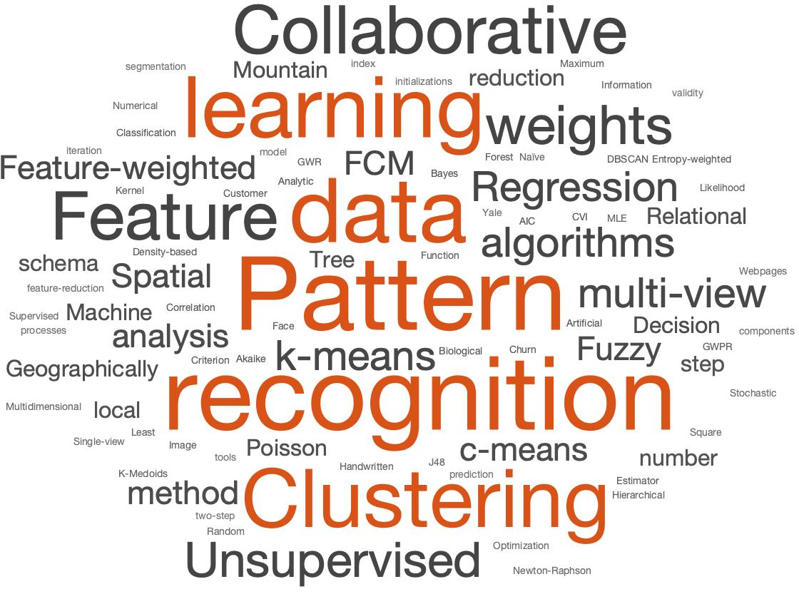

Kristina P. Sinaga
Mathematician
kristinasinaga57@yahoo.co.id
[Google Scholar]
[GitHub]
[DBLP]
[ResearchGate]
[ORCID iD]
Kristina was initially trained as a statistician, topping her class at the University of Sumatera Utara in 2013. After completing a MSc in Mathematics of Operation Research at University of Sumatera Utara in 2015, and a PhD in Applied Mathematics at Chung Yuan Christian University in 2020, she worked as a lecturer in a graduate program of information management system at Bina Nusantara University in Indonesia from November 2020 to April 2022. Kristina has broad interests in mathematics beyond Machine Learning and Deep Learning. She is also excited about simple and principled approaches which can be implemented in real-world scenarios. She loves using MATLAB for data analysis and Machine Learning. Her ultimate goal is to explore the foundational questions of intelligence using mathematical modeling and simulation. In recent years, she broadened her mindset even more and advanced into a modern and international scholar (She is currently searching for a postdoc/job position). Write her an email if you are interested in anything about her.
